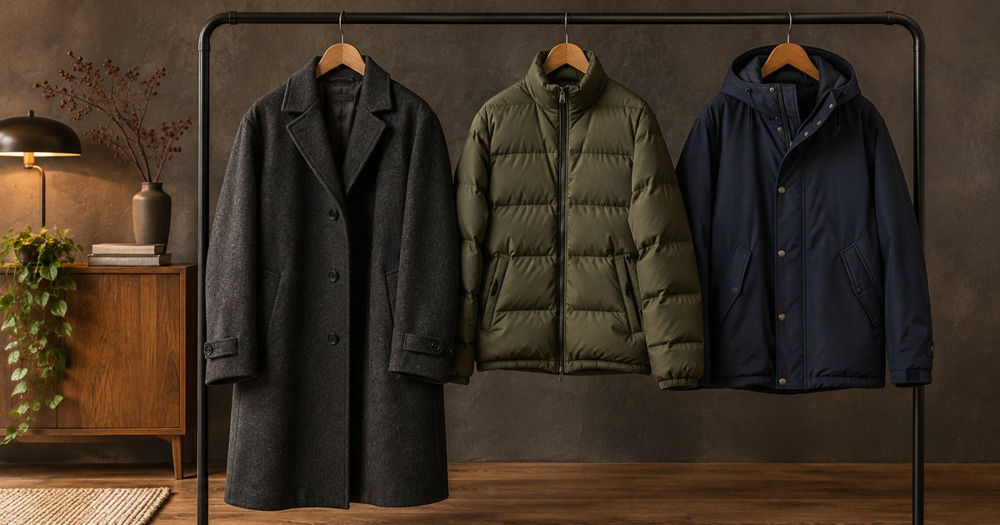

冬アウターの選び方。ダウン・ウール・中綿の違いと向いている人

※この記事にはアフィリエイトリンクが含まれています（広告について）。
冬のコーデはアウターの印象でほぼ決まります。値段も高めなので失敗したくないアイテムですが、素材によって暖かさ・見た目・手入れのしやすさが大きく変わります。ここでは代表的な3タイプを比べてみます。
ダウンジャケット：とにかく暖かさ重視の人に
水鳥の羽毛を詰めたダウンは、軽さと暖かさのバランスが最も優れています。商品ページでは「ダウン率（ダウンとフェザーの比率）」と「フィルパワー」を確認しましょう。ダウン率が高く、フィルパワーの数値が大きいほど、ふくらみがあって暖かいとされています。
注意点は、ボリュームが出やすいこと。細身に見せたいなら、ステッチ（縫い目）の幅が細いタイプや丈が短めのものを選ぶとすっきりします。
ウールコート：きれいめな印象を作りたい人に
チェスターコートやステンカラーコートなどのウールコートは、通勤にも休日にも使える大人の定番です。ウールの混率が高いほど保温性と上品な見た目が増しますが、価格も上がります。まずはウール50%以上を目安にすると、見た目と価格のバランスを取りやすいです。
中に厚手のニットを着る前提で、試着時は1サイズ上も比べてみると安心です。
中綿ジャケット：手入れの楽さと価格重視の人に
ポリエステルなどの化学繊維を詰めた中綿ジャケットは、家で洗えるものが多く、雨や雪にも比較的強いのがメリット。ダウンよりも手頃な価格帯のものが多く、アウトドアや自転車通勤などラフに使いたい人に向いています。
選び方の早見表
| タイプ | 暖かさ | きれいめ度 | 手入れ |
|---|---|---|---|
| ダウン | ◎ | △〜○ | △（クリーニング推奨が多い） |
| ウールコート | ○ | ◎ | △（ブラッシングが必要） |
| 中綿 | ○ | △ | ◎（洗えるものが多い） |
条件別に選んだ3点
記事の3タイプ（ダウン・ウールコート・中綿）から1着ずつ、素材と手入れ方法が販売ページで確認できるものを選びました。リンク先は記載の色・サイズが選ばれた状態です。仕様は2026年11月17日にAmazonの販売ページで確認した内容です。編集部が実際に使用したレビューではありません。購入前に最新の情報をご確認ください。
| 商品 | タイプ | 表地・中わた | 手入れ（販売ページ記載） |
|---|---|---|---|
| THE NORTH FACE ヌプシジャケット ND92555 | ダウン | ナイロン／ダウン80%・フェザー20% | 手洗いのみ |
| スーツジャパン チェスターコート ウール95%・カシミヤ5% | ウールコート | ウール95%・カシミヤ5% | ドライクリーニングのみ |
| Amazon Essentials 軽量パッカブル パファージャケット | 中綿 | ナイロン／ポリエステル | 洗濯機可 |
ダウン
THE NORTH FACE ヌプシジャケット ND92555（ブラック）
- 品番
- ND92555
- 表地
- ナイロン100%（リサイクルナイロン リップストップ）
- 中わた
- ダウン80%・フェザー20%
- 取り扱い
- 手洗いのみ
- リンク先
- ブラック・M
- 特徴
- ボリュームのあるショート丈のダウン。表地は撥水加工のリップストップナイロン（販売ページ記載）。
- 向いている人
- 寒い地域に住んでいる人や、屋外にいる時間が長い人
- 注意点
- フィルパワーは販売ページに記載がありません。ボリュームが出るシルエットなので、細身に見せたい人には向きません。
- 価格
- 価格・在庫は変動するため掲載していません（販売ページの確認日：2026年11月17日）。
ウールコート
スーツジャパン チェスターコート ウール95%・カシミヤ5%（シルバーグレー）
- 表地
- ウール95%・カシミヤ5%
- 裏地
- ポリエステル100%
- 仕様
- シングル・ノッチドラペル
- 取り扱い
- ドライクリーニングのみ
- リンク先
- シルバーグレー・M AB
- 特徴
- 記事の目安「ウール50%以上」を大きく上回るウール95%の表地。通勤のスーツの上にも、休日のニットの上にも羽織れる。
- 向いている人
- 通勤が多く、きれいめな印象のコートを1着持ちたい人
- 注意点
- 家では洗えません（ドライクリーニングのみ）。中に厚手のニットを着るなら、サイズ表で身幅を確認してください。
- 価格
- 価格・在庫は変動するため掲載していません（販売ページの確認日：2026年11月17日）。
中綿
Amazon Essentials 軽量パッカブル パファージャケット（ダークグレー）
- シェル
- ナイロン100%
- 裏地・中綿
- ポリエステル100%
- 取り扱い
- 洗濯機で冷水洗い可・低温でタンブル乾燥可
- リンク先
- ダークグレー・L
- 特徴
- 化学繊維の中綿を使った軽いジャケット。家の洗濯機で洗える（販売ページ記載）。
- 向いている人
- 手入れの楽さと価格を重視して、気軽に使える1着が欲しい人
- 注意点
- ダウンほどのボリュームはありません。サイズ表記が海外基準の場合があるので、サイズ表を確認してください。
- 価格
- 価格・在庫は変動するため掲載していません（販売ページの確認日：2026年11月17日）。
まとめ
1着目に迷ったら、通勤が多い人はウールコート、寒い地域や屋外にいる時間が長い人はダウン、とにかく気軽に使いたい人は中綿を選ぶと後悔しにくいです。
この記事に関連するアイテムを探す
Amazonの検索結果ページに移動します。条件に合う商品を比較してお選びください。
- メンズ ダウンジャケットAmazonで商品を探す
- メンズ チェスターコートAmazonで商品を探す
- メンズ 中綿ジャケットAmazonで商品を探す
価格・在庫・仕様は変わることがあります。購入前にAmazonの商品ページで最新の情報をご確認ください。